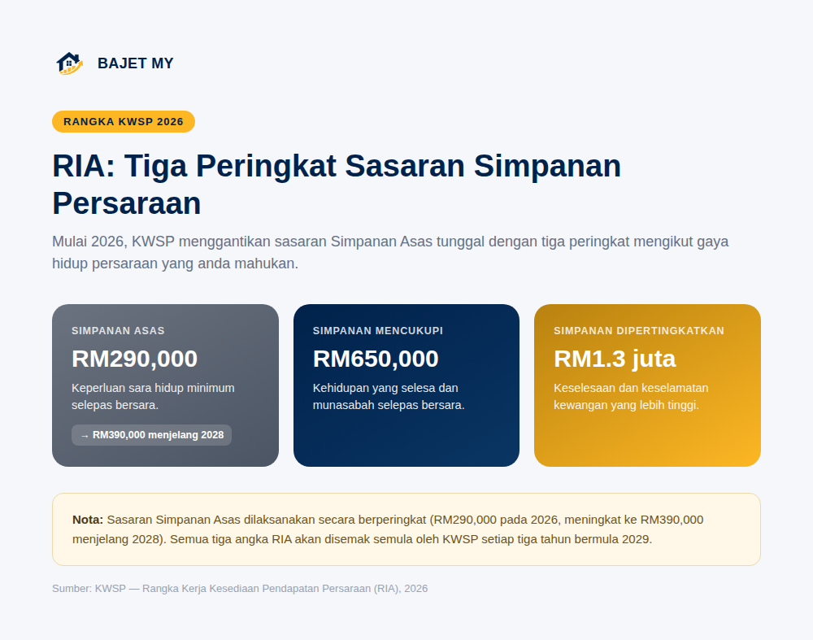

Mulai 1 Januari 2026, KWSP menggantikan sasaran "Simpanan Asas" tunggal yang lama dengan Rangka Kerja Kesediaan Pendapatan Persaraan (Retirement Income Adequacy — RIA) — tiga sasaran simpanan berbeza mengikut gaya hidup persaraan yang anda mahukan.

Apa itu RIA?
RIA ialah rangka kerja baharu KWSP untuk mengukur sejauh mana simpanan persaraan seseorang ahli mencukupi, berdasarkan anggaran perbelanjaan sara hidup asas semasa persaraan — bukan lagi satu angka tunggal untuk semua orang.
Rangka kerja ini menggantikan sasaran "Simpanan Asas" RM240,000 yang lama (diperkenalkan sebelum ini) dengan tiga peringkat yang lebih jelas menggambarkan tahap keselesaan hidup selepas bersara.
Tiga peringkat sasaran RIA
| Peringkat | Sasaran (pada umur 55) | Menggambarkan |
|---|---|---|
| Simpanan Asas | RM290,000 (2026)* | Keperluan sara hidup minimum sahaja |
| Simpanan Mencukupi | RM650,000 | Kehidupan yang selesa dan munasabah |
| Simpanan Dipertingkatkan | RM1,300,000 | Keselesaan dan keselamatan kewangan lebih tinggi |
Sasaran Simpanan Asas dilaksanakan secara berperingkat — bermula RM290,000 pada 2026, meningkat kepada RM390,000 menjelang 2028.
Nota: Angka-angka ini akan disemak semula oleh KWSP setiap tiga tahun bermula 2029, untuk kekal relevan dengan perubahan kos sara hidup dan keadaan ekonomi.
Kenapa sasaran lama digantikan?
Sasaran "Simpanan Asas" tunggal yang lama dikritik kerana terlalu ringkas — ia tidak membezakan antara seseorang yang sekadar mahu bertahan hidup selepas bersara, dengan seseorang yang mahu gaya hidup selesa atau lebih terjamin. RIA memberi ahli KWSP gambaran lebih jelas: "di mana saya berada sekarang, dan apa maksudnya untuk gaya hidup saya selepas bersara?"
Macam mana nak tahu sasaran mana yang sesuai untuk saya?
Tiada jawapan "betul" tunggal — ia bergantung kepada:
- Gaya hidup yang anda mahu selepas bersara — sekadar keperluan asas, atau kehidupan yang lebih selesa?
- Sumber pendapatan lain semasa persaraan — adakah anda ada simpanan/pelaburan di luar KWSP seperti ASB, unit trust atau harta sewa?
- Tanggungan dan komitmen — adakah anda perlu menanggung ahli keluarga lain selepas bersara?
Sebagai titik permulaan, ramai perancang kewangan mencadangkan sasaran Simpanan Mencukupi (RM650,000) sebagai objektif munasabah bagi kebanyakan ahli, dengan Simpanan Dipertingkatkan (RM1.3 juta) sebagai sasaran jangka panjang jika mampu.
Guna Kalkulator KWSP Bajet MY untuk unjuran peribadi anda
Angka RIA ini adalah sasaran umum kebangsaan — ia tidak mengambil kira gaji, umur semasa, kadar caruman atau baki KWSP sedia ada anda secara individu. Kalkulator KWSP Bajet MY mengunjurkan trajektori simpanan anda sendiri berdasarkan input peribadi, dan Perancang Persaraan "What If?" memaparkan garis panduan RIA ini terus pada graf unjuran anda supaya anda boleh lihat di mana unjuran anda berbanding tiga sasaran tersebut.
Ringkasan
RIA KWSP menggantikan sasaran Simpanan Asas tunggal dengan tiga peringkat — Asas (RM290,000 pada 2026, meningkat ke RM390,000 menjelang 2028), Mencukupi (RM650,000) dan Dipertingkatkan (RM1.3 juta) — untuk menggambarkan tahap kesediaan persaraan dengan lebih tepat. Guna kalkulator KWSP untuk melihat di mana unjuran simpanan peribadi anda berada berbanding sasaran-sasaran ini.
Sumber
- KWSP — Rangka Kerja Kesediaan Pendapatan Persaraan (RIA)
- KWSP — Peningkatan Dasar dan Produk 2026